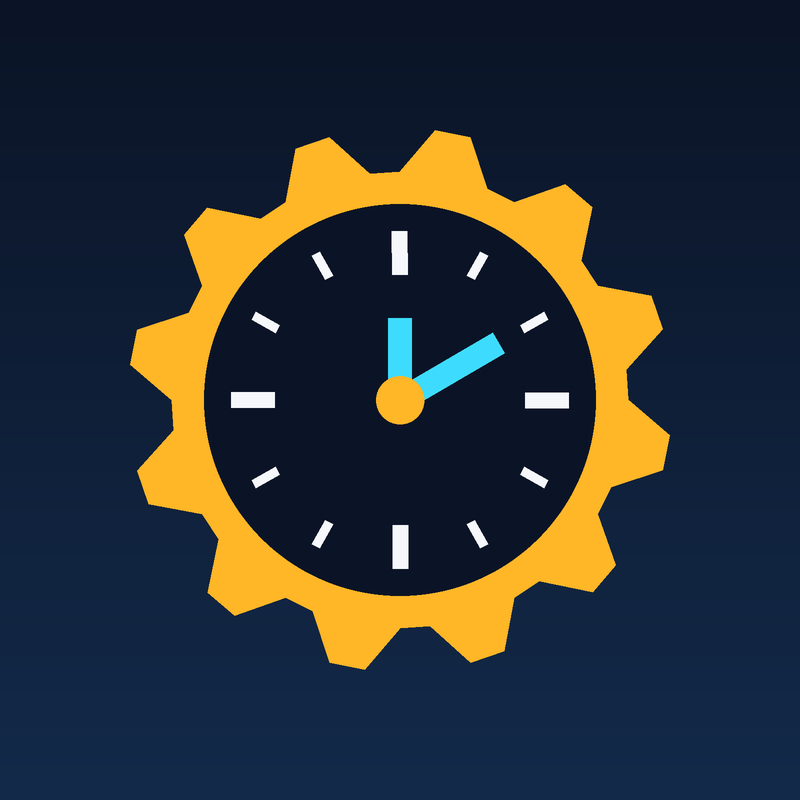

How It Ticks
Privacy Policy
Last updated: 15 November 2026
How It Ticks ("we") operates the How It Ticks channels and a private publishing tool, "How It Ticks Publisher", that uploads our own videos to our own accounts.
What we access: when we connect our own YouTube, TikTok or Instagram account, the tool receives an access token that lets it upload videos to that account and read statistics (views, watch time, likes, comments, shares) for videos we published. We do not access any other person's account or data.
How it is used: only to publish our videos and to measure how they perform so we can improve future videos.
Storage: tokens and statistics are stored only on our own computer. They are not sold, shared or transferred to anyone, and are not used for advertising.
Viewers: we do not collect personal information from people who watch our videos. Platforms (YouTube, TikTok, Instagram) handle viewer data under their own privacy policies.
Google API Services: our use of information received from Google APIs adheres to the Google API Services User Data Policy, including the Limited Use requirements. Our use of YouTube API Services is also subject to the Google Privacy Policy (\1).
Deleting access: we can revoke the tool's access at any time from each platform's security settings (for Google: \1), after which stored tokens are deleted.
Contact: howitticksdaily@gmail.com